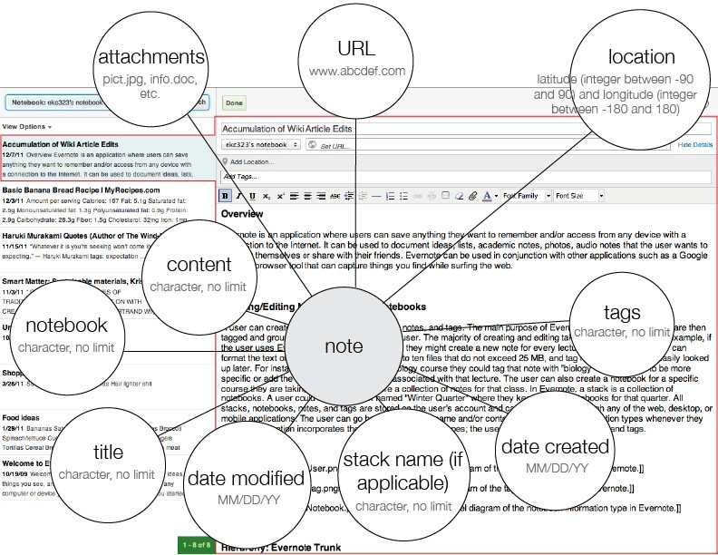
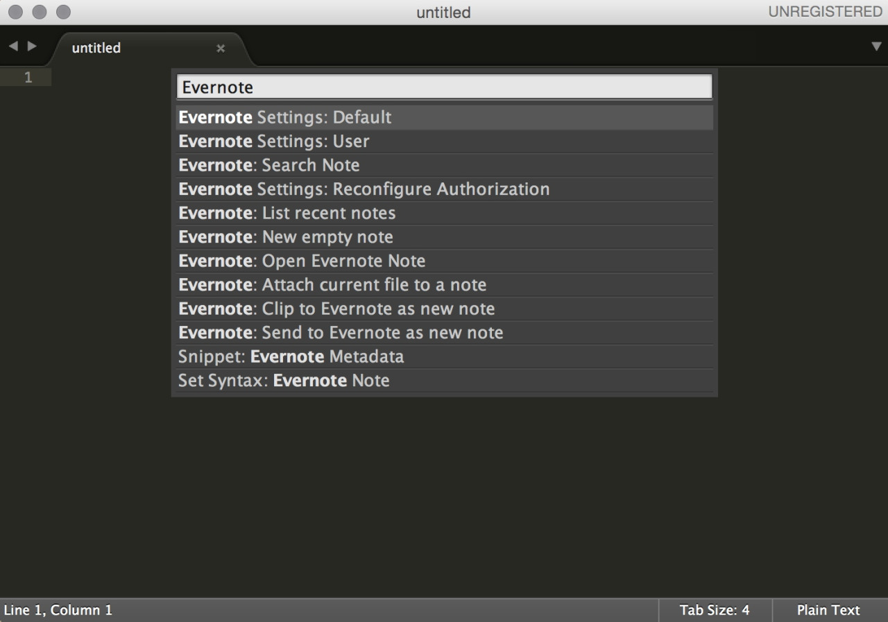
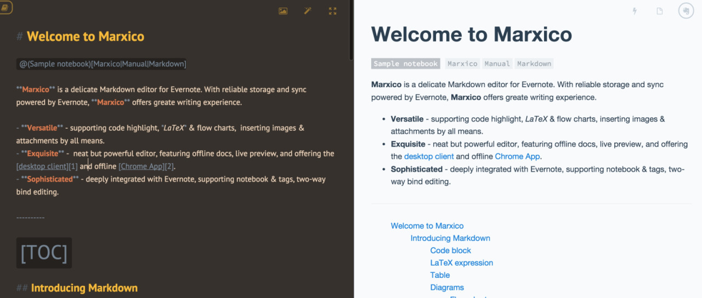

Markdown
一种可以使用普通文本编辑器编...
业界资讯 来源：blog.ernest.me 发布：2016-01-18 浏览：6786
2015 年 9 月，Evernote 开始发起对内置支持 Markdown 快捷输入的公测邀请。
在 2015 年 11 月，Evernote 发布正式版本。
但诡异的是，不管是公测，还是正式发布，都显得不那么重视。举例来说，在正式发布的官方博客中，只提到了 Windows 版本的更新，附加对特性的介绍。并未在官方渠道中，对 Mac 版更新进行说明。
作为一个许多年的 Evernote Premium 用户，以及一个 Markdown 用户。
Member Since August 18th, 2010
我对 Evernote 不支持 Markdown 这件事一直耿耿于怀，也尝试了诸多方案。
当然，必须要说明的是，Evernote 不支持 Markdown 这件事，有一半原因是由于 Evernote 最开始选用的基于 XML 的富文本存储结构 ENML。这个存储结构在 08 年 ~ 10 年时，是个杀手级特性，它允许你在一个 note 里的任何地方插入附件（图片、音频、附件），而不是像普通的笔记应用，给一个附件栏，在里面管理附件。

在这个复杂的、完善的格式系统上，如何加上对 Markdown 的支持，是一个值得思考的问题。
考虑到编辑文本这个过程本身，Evernote 这个平台如果支持 Markdown ，其本身是承载了编辑、多端同步的角色。而一旦 Evernote 自己不支持，那第三方想去做，只能从编辑器出发。
如果一个编辑器，能做到，我用 Markdown 写完，会以输出后的格式同步到 Evernote，完成笔记的存储。然后，当我想编辑旧笔记的时候，又能以 Markdown 的格式来编辑。
这个听起来很简单。
但在这 5 年看到的方案，我们发现，能完美完成这个流程的，几乎没有。
为什么呢？还得归功于实际操作的难度。
流程主要分成四步：
第一步，存储笔记的 Markdown 格式的原始文本；
第二步，生成 ENML 格式的 Evenrote 笔记；
第三步，同步 ENML 文本到 Evernote；
第四步，绑定同步到 Evernote 中的笔记和 Markdown 格式的原始文本之间的关系。
其中有两大难题要解决：
而第二点需要反向解析 ENML 到 Markdown，有明显的不可逆的格式的兼容性，一来无法做到一对一的转换，二来要付出的成本相当高。因此，我们也没有看到任何一个做到这一点。
我们重点看第一点。
目前完成第一点的，有两个案例：

Sublime text Evernote plugin 做到的是在 Sublime text 中编辑 Markdown 文本，本地保存（可用 Dropbox 等云盘做同步）原始文本和 Evernote 笔记 ID 及两者的关联关系。这样，在 Sublime 中可以浏览由 Sublime 创建同步到 Evernote 的笔记列表，并对其进行编辑再次同步。在使用过程中，一旦在 Evernote 中对笔记进行了更新，则有一定几率导致笔记同步冲突。应该是 plugin 的 bug。

Marxico 很聪明地利用 ENML 中的隐藏标签来存储 Markdown 格式的原始文本。通过提供在线的跳转服务，在 Evernote 笔记中，插入绑定关系的链接。这样，在点击笔记中的编辑按钮后，将会直接调转到编辑器，编辑器读取隐藏标签中存储的原始文本，用来编辑。这个和 Sublime text Evernote plugin 在原始文本的存储同步上就是巨大的区别，实在是方便了不少。
印象笔记 Windows 最新版增加了 7 个能让你一秒钟变高效的快捷键，键盘侠们速度 get 起来吧！
马上输入下列 Markdown 语言，然后按下回车键，体验快捷键的神奇魔法。
新增快捷键：
温馨提示：请在段首输入上述快捷键，并在输入之后按下回车键，全面体验更高效的笔记编辑方式。
可以看到，这种支持，本质上是为了满足喜欢 Markdown 的用户的输入习惯，而非编辑习惯。给了你快捷键，用 Markdown 的手法完成初始输入，然后，只能在输出后的 ENML 上进行编辑更新，这个和 Markdown 倡导的文本格式并不相符。
可以说，Evernote 这次的支持，无非就是对 Alternote 的借鉴，表面上迎合一下 Markdown 用户。
原 文：blog.ernest.me
一种可以使用普通文本编辑器编...
评论 (100)